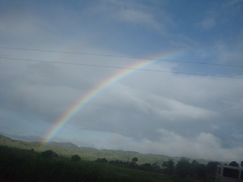
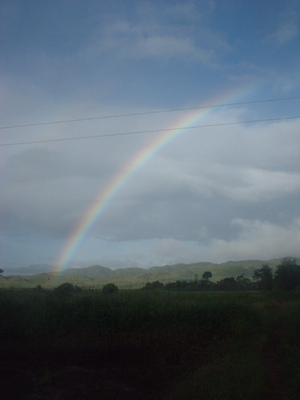

beluntu  
/bɔluntu/
Var. baluntu
n.
“rainbow”
1.
n.
rainbow
Egkakita ta ka baluntu ke eg-uran.
We can see a rainbow when raining.
Cult. It is said that if someone points to a rainbow, their index finger (alintuturu) will shrivel up and decay (egkamewù). It used to be said that a rainbow in the sky is a sign of forthcoming evil.
Eng. rainbow
Tag. bahaghárì
Ceb. balángaw
Ilo.: bullaláyaw
Binukid: balugtu
Tigwanon: baluntu
WBM: beludtu
Ilianen: beluntu
Cotabato Manobo: belugtu
Obo: bauntu
Proto: balugtu
OCM: Ethnometeorology (821)
DDP: Rain (1.1.3.3)
Online dict status: -
Usage level: B
v.
for a rainbow (egpamaluntu, migpamaluntu/impamaluntu, pamaluntu, agent, eg><ø-paN-) to appear because the sun is shining through light rain (egpasilak-silak)
Seled kew te baley su egpamaluntu, due egmanleleug ne kenè ne iling kanta.
You should go inside the house because the rainbow is appearing; there are some walking who are not like us.
OCM: Ethnometeorology (821)
DDP: Sun (1.1.1), Rain (1.1.3.3)
Online dict status: -
Usage level: M
2.
v.
for something (egkabeluntu, nabeluntu, theme, egkA><ø-) to be arch in structure
Eng. arch structure
Online dict status: -
Usage level: R
Updated by: RJH,AAA,RUL,NJK,RJH,NJK,QDL,NJK,RAA,QDL
Last updated: 09/Aug/2010
This page last updated: 19/May/2012
Copyright © 2009-2010, Matigsalug Language Christian Association, Inc